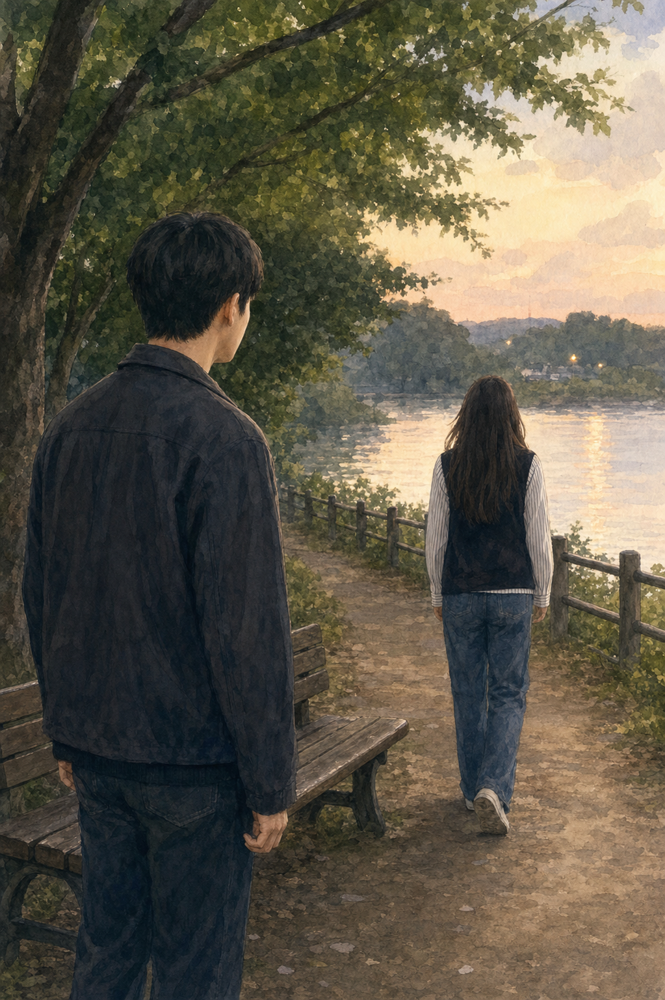

057. 언제 가는데
토요일 오전, 용식은 세차를 마친 BMW를 몰고 초연의 집 앞으로 향했다. 창문을 조금 내리자 초여름 특유의 눅눅한 바람이 차 안으로 들어왔다.
[김초연] "오늘 어디 가?"
[김용식] "그냥, 바람 쐬러 가자."
초연이 조수석에 타며 안전벨트를 맸다. 라디오에서는 아침 가요 프로그램이 흘러나오고 있었다. 그녀는 창밖을 보며 콧노래를 흥얼거렸다. 요 며칠 사이 보기 드문 밝은 얼굴이었다.
용식은 초연을 데리고 수원 일월저수지 근처로 향했다.
특별한 이유는 없었다. 그냥 요즘 계속 답답해하던 그녀에게 바람이라도 쐬어 주고 싶었다. 저수지를 따라 난 산책로에는 주말을 즐기러 나온 사람들이 드문드문 보였다.
[김초연] "여기 오랜만이다. 예전에 소풍 왔던 곳인데."
[김용식] "그랬어?"
[김초연] "고등학교 때. 친구들이랑."
초연이 앞장서 걸으며 웃었다. 물 위로 오후 햇살이 잘게 부서지고 있었다. 오리배 몇 척이 물살을 가르며 지나갔고, 그 소리가 잔잔하게 울렸다.
두 사람은 벤치에 앉아 캔음료를 나눠 마셨다. 초연은 오랜만에 편안해 보였다. 지난 몇 주 사이 쌓였던 긴장이 잠깐이나마 풀린 얼굴이었다.
[김초연] "우리 요즘 좀 이상했던 것 같아. 나도 왜 그렇게 예민했는지 모르겠어."
[김용식] "괜찮아. 그럴 수도 있지."
[김초연] "이렇게 둘이 있으니까 좋다."
초연이 그의 어깨에 머리를 기댔다. 용식은 그 순간이 오래도록 이어지길 바랐다. 그런데 동시에, 오늘은 반드시 말해야 할 것이 있다는 생각이 목에 걸려 있었다.
[김초연] "방학 때 여행 갈 데는 좀 알아봤어?"
[김용식] "어, 조금."
[김초연] "제주도 진짜 가자. 나 비행기 타는 거 좋아해."
[김용식] "그러자."
용식은 대답하면서도 속으로 뜨끔했다. 방학 이야기가 나온 김에 지금 말해야 한다는 생각과, 이 좋은 분위기를 깨고 싶지 않다는 생각이 동시에 부딪혔다. 결국 후자를 이기지 못하고 며칠을 더 미뤄 왔지만, 오늘은 더 미룰 수 없다는 것도 알고 있었다.
[김용식] "초연아."
[김초연] "응?"
[김용식] "나 할 말이 있어."
초연이 고개를 들어 그를 봤다. 표정에 옅은 궁금증이 스쳤다.
[김초연] "뭔데, 무섭게."
[김용식] "나 6월 중순에 일본으로 어학연수 가려고."
말이 나온 순간, 초연의 표정이 굳었다. 방금 전까지의 편안함이 순식간에 사라졌다.
[김초연] "……갑자기 무슨 소리야."
[김용식] "갑자기는 아니고, 계속 생각하고 있었어. 방학 두 달 동안."
[김초연] "왜 이제 말해."
[김용식] "말할 타이밍을 못 찾았어."
초연은 잠시 말이 없었다. 오리배 소리도, 지나가는 사람들의 웃음소리도 그 침묵 속에서 유난히 크게 들렸다.

[김초연] "얼마나 가는 건데."
[김용식] "두 달. 6월 중순부터 8월 중순까지."
[김초연] "두 달……"
초연은 캔음료를 만지작거리며 시선을 물 쪽으로 돌렸다. 표정을 읽기 어려웠다.
[김용식] "일본어도 늘고, 나중에 취업이나 뭐에도 도움 될 것 같아서."
[김초연] "그래서 언제부터 계획한 거야."
[김용식] "얼마 안 됐어. 최근에."
거짓말은 아니었지만, 완전한 진실도 아니었다. 학원에 다니기 시작할 때부터 어렴풋이 그려 온 계획이라는 말은 차마 하지 못했다.
[김초연] "나는? 나는 어떻게 되는 건데."
[김용식] "당연히 계속 만나는 거지. 두 달이면 금방 지나가."
[김초연] "두 달이 어떻게 금방이야."
[김용식] "매일 전화하고 문자할게. 국제전화 카드도 사 놓을 거야."
[김초연] "그게 되겠어?"
초연의 목소리가 처음으로 떨렸다. 용식은 뭐라 더 말해야 할지 몰라 그녀의 손을 잡으려 했지만, 초연은 그 손을 슬쩍 피했다.
초연은 자리에서 일어났다.
[김초연] "나 좀 걷고 싶어."
[김용식] "같이 가자."
[김초연] "혼자 있고 싶어."
그녀는 그렇게 말하고 산책로를 따라 혼자 걸어갔다. 용식은 그 뒷모습을 붙잡지 못하고 벤치에 그대로 앉아 있었다.
저수지 물결에 오후 햇살이 부서지는 걸 보며, 용식은 방금 자신이 무너뜨린 것이 무엇인지 뒤늦게 실감했다. 십 분, 이십 분이 지나도 초연은 돌아오지 않았다. 용식이 자리에서 일어나 그녀를 찾으러 가려는데, 폴더폰이 짧게 진동했다.
용식은 문자를 몇 번이나 다시 읽었다. 저수지 반대편 정류장 쪽으로 걸어가는 초연의 작은 실루엣이 멀리 보였다. 그는 부르려다가, 그녀의 걸음이 확고하다는 걸 느끼고 멈췄다.
집으로 돌아가는 내내 용식은 마음이 무거웠다. 오늘 하루 좋았던 시간이 순식간에 뒤집힌 것 같았다. 몇 번이나 전화를 걸었지만 신호만 갈 뿐 받지 않았다. 라디오를 끄고 조용히 운전만 했다. 창밖으로 지나가는 가로수 그림자가 차 안을 스치듯 지나갔다.
밤이 되어서야 짧은 문자 하나가 왔다.
그게 전부였다. 화도, 서운함도 담기지 않은 담담한 네 글자였다. 그 담담함이 오히려 더 무겁게 다가왔다. 용식은 답장을 몇 번이나 고쳐 쓰다가, 결국 정확한 날짜만 짧게 적어 보냈다.
그 이후로는 아무 답장도 오지 않았다. 용식은 폰을 손에 쥔 채 밤늦게까지 그 화면만 바라보고 있었다.
방 안 스탠드 불빛 아래서, 용식은 오늘 하루를 곱씹었다. 저수지의 오리배 소리, 초연의 콧노래, 그리고 그 뒤에 이어진 침묵까지. 어학연수 이야기를 꺼내는 순간까지는 분명 완벽한 하루였다. 그런데 그 한마디로 모든 게 뒤집혔다.
한서윤에게도, 이 계획을 아직 말하지 못한 상태였다. 두 사람 모두 그에게는 쉽게 놓을 수 없는 존재가 되어 있었다. 두 사람 모두에게 언제, 어떻게 이야기를 꺼내야 할지 용식은 여전히 답을 찾지 못하고 있었다. 다만 오늘 초연의 반응을 보니, 앞으로 남은 대화가 결코 쉽지 않을 거라는 것만은 분명해졌다. 창밖 가로등이 하나둘 꺼지는 걸 보며, 용식은 밤이 깊도록 잠들지 못했다.